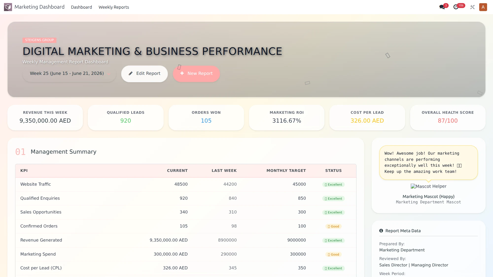
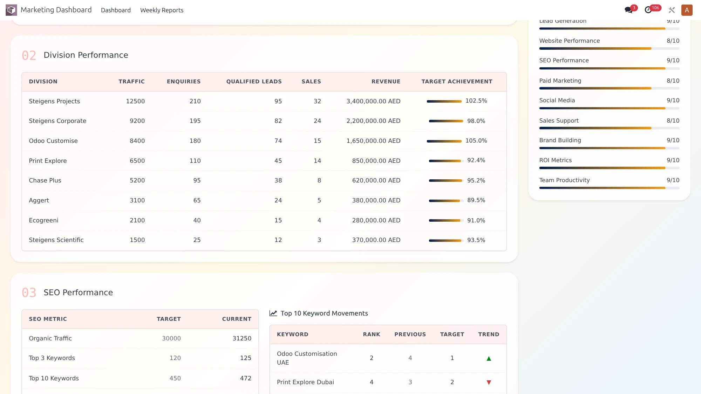
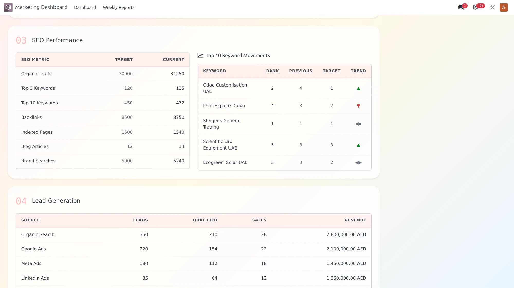
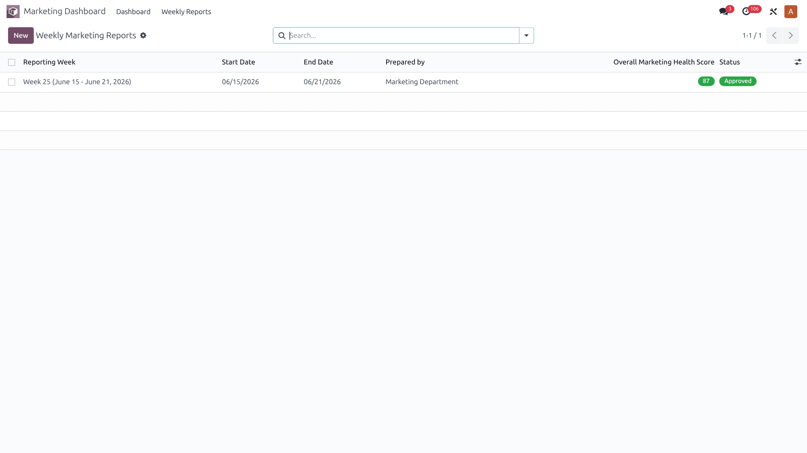

App 04 · Marketing
A weekly digital marketing and business performance report for management, with 14 sections and an overall health score.

Captured from the real module on an anonymised copy of the database. Names are fictional, and confidential figures are blurred. Click any screen to enlarge it.
Weekly management report: headline KPIs, status-rated management summary and the overall health score.
Division performance: traffic, enquiries, qualified leads, sales and target achievement.

SEO targets vs actuals and top keyword movements with trend arrows.

Each week is a record the marketing team fills in and management approves.
